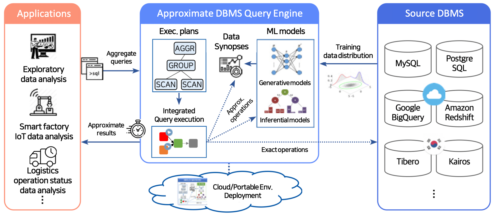

Introduction
What is TrainDB?
TrainDB is an ML-model based approximate DBMS query engine that provides approximate but accurate enough query results based on machine learning models in order to support exploratory data analysis for timely business decision-making.

TrainDB's key features are as follows:
- Providing approximate query results without access to base tables after ML model training
- Remote ML model training/serving with Kubeflow-based cloud ML model serving framework
- Various DBMS data sources support
TrainDB's Main R&D Topics
- TrainDB: an ML-model based approximate query processing engine
- SQL-like approximate query language
- Approximate query processing using synopsis data that are synthesized by ML models
- Approximate query processing using ML inference models
- Various DBMS data sources support via extensible data source adapters
- ML model library for approximate query processing
- Synopsis generative ML models + inferential ML models
- Synopsis generative ML models: GAN-based models(e.g., TableGAN, OCT-GAN), score-based generative models
- Inferential ML models: mixture density networks(MDN), relational sum-product networks(RSPN)
- Error estimation for approximate query evaluation
- Continual learning to update base table changes
- Synopsis generative ML models + inferential ML models
- Cloud ML model serving framework
- A framework for training/serving ML models in remote GPU servers
- Kubeflow-based ML model registry/training/serving support
- Visual Exploratory Data Analysis Support Tools for TrainDB
- Approximation query result visualization for exploratory data analysis
- Visual OLAP analysis support for multi-dimensional data analysis